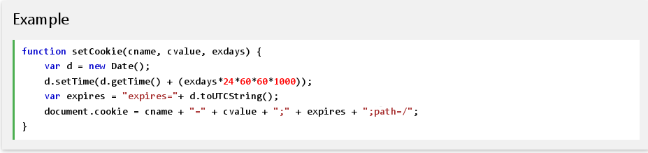
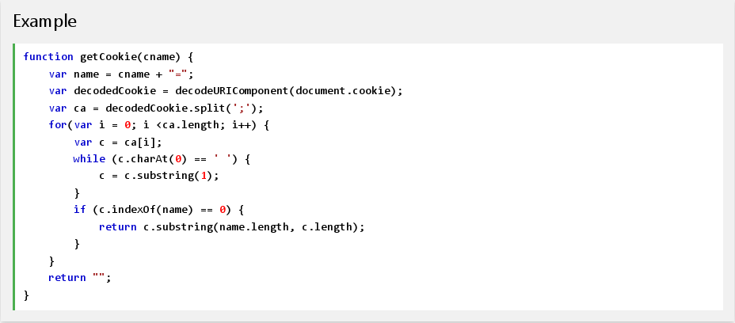
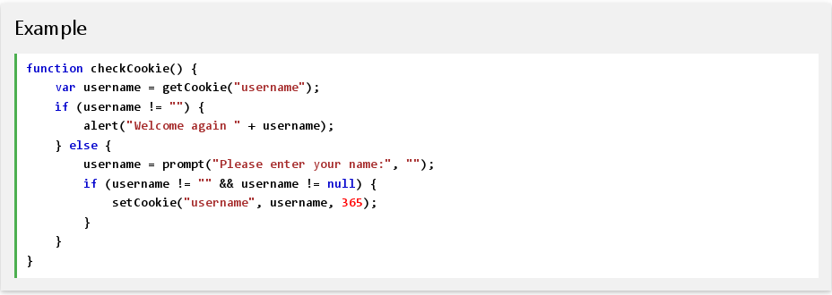

Cookies let you store user information in web pages.
Cookies are data, stored in small text files, on your computer.
When a web server has sent a web page to a browser, the connection is shut down, and the server forgets everything about the user.
Cookies were invented to solve the problem "how to remember information about the user":
Cookies are saved in name-value pairs like:
| username = John Doe |
When a browser requests a web page from a server, cookies belonging to the page is added to the request. This way the server gets the necessary data to "remember" information about users.
Note: None of the examples below will work if your browser has local cookies support turned off.
JavaScript can create, read, and delete cookies with the document.cookie property.
With JavaScript, a cookie can be created like this:
document.cookie ="username=John Doe";
You can also add an expiry date (in UTC time). By default, the cookie is deleted when the browser is closed:
document.cookie ="username=John Doe; expires=Thu, 18 Dec 2013 12:00:00 UTC";
With a path parameter, you can tell the browser what path the cookie belongs to. By default, the cookie belongs to the current page.
document.cookie ="username=John Doe; expires=Thu, 18 Dec 2013 12:00:00 UTC; path=/";
With JavaScript, cookies can be read like this:
var x = document.cookie;
Note: document.cookie will return all cookies in one string much like: cookie1=value; cookie2=value; cookie3=value;
With JavaScript, you can change a cookie the same way as you create it:
document.cookie ="username=John Doe; expires=Thu, 18 Dec 2013 12:00:00 UTC; path=/";
The old cookie is overwritten.
Deleting a cookie is very simple. You don't have to specify a cookie value when you delete a cookie. Just set the expires parameter to a passed date:
document.cookie ="username=; expires=Thu, 18 Dec 2013 12:00:00 UTC; path=/";
Note: You should define the cookie path to ensure that you delete the right cookie. Some browsers will not let you delete a cookie if you don't specify the path.
The document.cookie property looks like a normal text string. But it is not.
Even if you write a whole cookie string to document.cookie, when you read it out again, you can only see the name-value pair of it.
If you set a new cookie, older cookies are not overwritten. The new cookie is added to document.cookie, so if you read document.cookie again you will get something like:
cookie1 = value; cookie2 = value;
If you want to find the value of one specified cookie, you must write a JavaScript function that searches for the cookie value in the cookie string.
In the example to follow, we will create a cookie that stores the name of a visitor.
The first time a visitor arrives to the web page, he will be asked to fill in his name. The name is then stored in a cookie.
The next time the visitor arrives at the same page, he will get a welcome message.
For the example we will create 3 JavaScript functions:
First, we create a function that stores the name of the visitor in a cookie variable:
Example explained:
The parameters of the function above are the name of the cookie (cname), the value of the cookie (cvalue), and the number of days until the cookie should expire (exdays).
The function sets a cookie by adding together the cookie name, the cookie value, and the expires string.
Then, we create a function that returns the value of a specified cookie:
Function explained:
Take the cookiename as parameter (cname).
Create a variable (name) with the text to search for (cname + "=").
Decode the cookie string, to handle cookies with special characters, e.g. '$'
Split document.cookie on semicolons into an array called ca (ca = decodedCookie.split(';')).
Loop through the ca array (i = 0; i < ca.length; i++), and read out each value c = ca[i]).
If the cookie is found (c.indexOf(name) == 0), return the value of the cookie (c.substring(name.length, c.length).
If the cookie is not found, return "".
Last, we create the function that checks if a cookie is set.
If the cookie is set it will display a greeting.
If the cookie is not set, it will display a prompt box, asking for the name of the user, and stores the username cookie for 365 days, by calling the setCookie function:
The example of this page runs the checkCookie() function when the page loads.